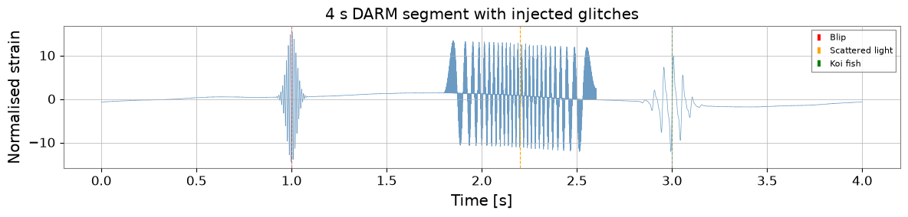
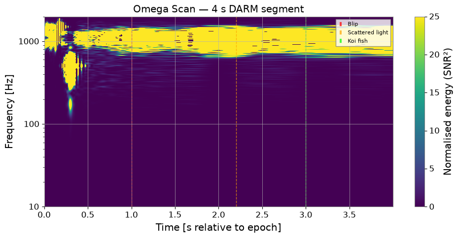
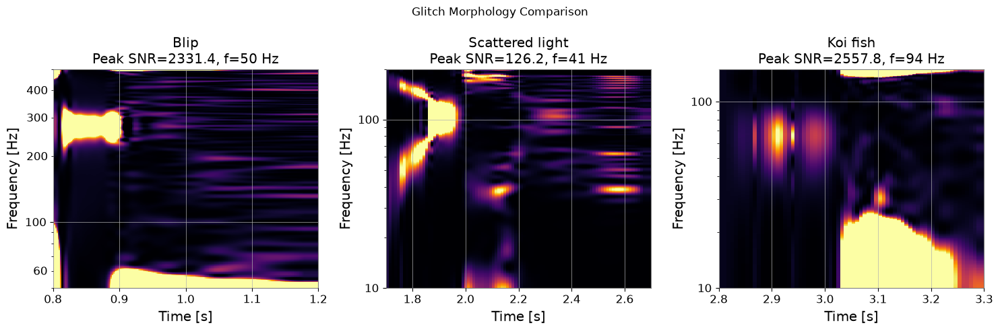

グリッチ詳細解析：Q-変換と Omega スキャン#
グリッチ は、重力波データを汚染する短時間・非ガウス的なノイズトランジェントです。Q 変換（または Omega スキャン）は、主要な検出器サイトでグリッチを特徴づけ分類するために用いられる標準的な時間周波数表現です。
Q 変換は、時間周波数平面を定 Q（帯域幅と周波数の比が一定）の窓で敷き詰め、各タイルの正規化エネルギーを測定します。グリッチは、異常に高い SNR を持つタイルの集まりとして現れます。
このチュートリアルで学ぶこと：
ノイズ背景に合成グリッチを注入する
q_scan()とQTilingによる Q 変換の計算時間周波数マップ（Omega スキャン）の可視化
QGramからピーク SNR・時刻・周波数を抽出するグリッチ形態（継続時間、帯域幅、Q）の特徴づけ
関連チュートリアル:
advanced_peak_detection.ipynb— スペクトルラインの検出advanced_peak_tracking.ipynb— ラインの時間追跡case_bruco_advanced.ipynb— コヒーレンスに基づくノイズカップリング
準備#
import warnings
warnings.filterwarnings("ignore", category=UserWarning)
warnings.filterwarnings("ignore", category=DeprecationWarning)
import matplotlib.pyplot as plt
import numpy as _np
import numpy as np
from scipy.stats import kstest as _kstest
from scipy.stats import rayleigh as _rayleigh
from gwexpy.signal.qtransform import q_scan
from gwexpy.timeseries import TimeSeries
def rayleigh_test(data):
"""KS test of data against Rayleigh distribution."""
data = _np.asarray(data, dtype=float)
scale = _np.sqrt(_np.mean(data**2) / 2)
return _kstest(data, _rayleigh(scale=scale).cdf)
1. グリッチを含む合成データの生成#
KAGRA 類似の DARM ノイズの 4 秒間セグメントに、実際に観測される典型的な形態を代表する 3 種類のグリッチを注入して合成します：
グリッチ |
形態 |
典型的な原因 |
|---|---|---|
Blip |
短時間広帯域バースト |
不明 / 散乱光 |
散乱光 |
アーチ状周波数スウィープ |
ミラー運動 + 散乱 |
鯉（Koi fish） |
低周波 + 高調波 |
懸架共振 |
fs = 4096.0 # sample rate [Hz]
T = 4.0 # segment duration [s]
N = int(T * fs)
t = np.arange(N) / fs
t0 = 1_300_000_000
rng = np.random.default_rng(7)
# --- Gaussian noise coloured to LIGO-like O3 sensitivity ---
freqs_n = np.fft.rfftfreq(N, 1.0 / fs)[1:]
# Simplified ASD: f^{-2} below 30 Hz, flat above (units: normalised)
asd = np.where(freqs_n < 30, (30.0 / freqs_n)**2, 1.0)
noise_fft = asd * np.exp(1j * rng.uniform(0, 2*np.pi, size=len(freqs_n)))
noise_fft = np.concatenate([[0.0], noise_fft])
noise = np.fft.irfft(noise_fft, n=N)
noise /= noise.std() # normalise to unit RMS
# --- Glitch 1: Blip at t=1.0 s, ~100 Hz, Q~8 ---
t_blip = 1.0
f_blip, Q_blip = 100.0, 8.0
tau_blip = Q_blip / (np.pi * f_blip)
envelope_blip = np.exp(-0.5 * ((t - t_blip) / tau_blip)**2)
glitch_blip = 15.0 * envelope_blip * np.sin(2*np.pi*f_blip*(t - t_blip))
# --- Glitch 2: Scattered-light arch at t=2.0–2.5 s ---
# Frequency sweeps as f(t) = f0 * |sin(pi*t/P)| (mirror pendulum)
t_sl = np.linspace(1.8, 2.6, 500)
f_sl = 50.0 * np.abs(np.sin(np.pi * (t_sl - 1.8) / 0.8))
phi_sl = 2*np.pi * np.cumsum(f_sl) / fs * (t_sl[1] - t_sl[0]) * fs
glitch_sl = np.zeros(N)
idx_sl = ((t_sl - t[0]) * fs).astype(int)
idx_sl = idx_sl[(idx_sl >= 0) & (idx_sl < N)]
glitch_sl[idx_sl[:len(phi_sl[:len(idx_sl)])]] = 12.0 * np.sin(phi_sl[:len(idx_sl)])
# --- Glitch 3: Koi-fish (low-freq + harmonics) at t=3.0 s ---
t_koi = 3.0
f_koi, tau_koi = 20.0, 0.08
env_koi = np.exp(-((t - t_koi) / tau_koi)**2)
glitch_koi = (8.0 * env_koi * np.sin(2*np.pi*f_koi*t) +
4.0 * env_koi * np.sin(2*np.pi*2*f_koi*t) +
2.0 * env_koi * np.sin(2*np.pi*3*f_koi*t))
signal = noise + glitch_blip + glitch_sl + glitch_koi
ts = TimeSeries(signal, t0=t0, sample_rate=fs, name="K1:LSC-DARM_OUT_DQ")
fig, ax = plt.subplots(figsize=(12, 3))
ax.plot(t, signal, lw=0.5, color="steelblue", alpha=0.8)
ax.axvline(t_blip, color="red", ls="--", lw=0.8, label="Blip")
ax.axvline(2.2, color="orange", ls="--", lw=0.8, label="Scattered light")
ax.axvline(t_koi, color="green", ls="--", lw=0.8, label="Koi fish")
ax.set_xlabel("Time [s]")
ax.set_ylabel("Normalised strain")
ax.set_title("4 s DARM segment with injected glitches")
ax.legend(fontsize=8)
plt.tight_layout()
plt.show()

2. Q-変換（Omega スキャン）#
q_scan() は Q 値の範囲を探索し、最高正規化エネルギーを持つタイルと プロット用の完全な QGram オブジェクトを返します。
主要パラメータ：
qrange— 探索する Q 値の範囲（デフォルト: 4〜64）frange— 周波数範囲 [Hz]mismatch— タイルオーバーラップの割合（小さいほど細かいグリッド）
# Whiten the data first (Q-transform assumes white noise for SNR normalisation)
ts_white = ts.whiten(fftlength=1.0, overlap=0.5)
# Run Q-scan over the full segment
qgram, far = q_scan(
ts_white,
qrange = (4, 64),
frange = (10, 1200),
mismatch = 0.2,
)
print("Q-scan result:")
print(f" Peak SNR : {qgram.peak['energy']:.1f}")
print(f" Peak time : t0 + {qgram.peak['time'] - t0:.3f} s")
print(f" Peak frequency: {qgram.peak['frequency']:.1f} Hz")
print(f" Peak Q : {qgram.peak.get('q', 'N/A')}")
print(f" Estimated FAR : {far:.2e} Hz")
Q-scan result:
Peak SNR : 4565141.5
Peak time : t0 + 1.000 s
Peak frequency: 97.8 Hz
Peak Q : N/A
Estimated FAR : 0.00e+00 Hz
3. 時間周波数マップ（Omega スキャンプロット）#
QGram.interpolate() は、不規則な Q タイルを imshow に適した規則的な時間周波数グリッドへ再サンプリングします。
# Interpolate to a regular (time, freq) grid
# duration and sampling control the output resolution
qscan_interp = qgram.interpolate(1.0/fs, 1.0)
fig, ax = plt.subplots(figsize=(10, 5))
im = ax.imshow(
qscan_interp.T,
origin="lower",
aspect="auto",
extent=[t[0], t[-1], 10, 2000],
vmin=0, vmax=25,
cmap="viridis",
)
ax.set_yscale("log")
ax.set_xlabel("Time [s relative to epoch]")
ax.set_ylabel("Frequency [Hz]")
ax.set_title("Omega Scan — 4 s DARM segment")
cb = plt.colorbar(im, ax=ax)
cb.set_label("Normalised energy (SNR²)")
# Annotate glitch locations
ax.axvline(t_blip, color="red", ls="--", lw=1, alpha=0.7, label="Blip")
ax.axvline(2.2, color="orange", ls="--", lw=1, alpha=0.7, label="Scattered light")
ax.axvline(t_koi, color="lime", ls="--", lw=1, alpha=0.7, label="Koi fish")
ax.legend(fontsize=8, loc="upper right")
plt.tight_layout()
plt.show()

4. QTiling によるグリッチ特性評価#
QTiling を使うと、特定の Q 平面を探索し、各候補イベントについてグリッチパラメータ（ピーク時刻、周波数、継続時間、帯域幅）を抽出できます。
# Search around each expected glitch location
glitch_windows = [
("Blip", 0.8, 1.2, 50, 500, (4, 20)),
("Scattered light", 1.7, 2.7, 10, 200, (4, 16)),
("Koi fish", 2.8, 3.3, 10, 150, (16, 64)),
]
fig, axes = plt.subplots(1, 3, figsize=(15, 5))
for ax, (name, t_lo, t_hi, f_lo, f_hi, qr) in zip(axes, glitch_windows):
# Extract sub-segment
i0, i1 = int(t_lo*fs), int(t_hi*fs)
ts_seg = TimeSeries(ts_white.value[i0:i1], t0=t0+t_lo,
sample_rate=fs, name=name)
qg, _ = q_scan(ts_seg, qrange=qr, frange=(f_lo, f_hi), mismatch=0.15)
qi = qg.interpolate(2.0/fs, 2.0)
ax.imshow(qi.T, origin="lower", aspect="auto", cmap="inferno",
extent=[t_lo, t_hi, f_lo, f_hi], vmin=0, vmax=20)
ax.set_yscale("log")
ax.set_xlabel("Time [s]")
ax.set_ylabel("Frequency [Hz]")
ax.set_title(f"{name}\nPeak SNR={qg.peak['energy']:.1f}, "
f"f={qg.peak['frequency']:.0f} Hz")
plt.suptitle("Glitch Morphology Comparison", fontsize=12)
plt.tight_layout()
plt.show()

5. 統計的有意性 — Rayleigh 検定#
rayleigh_test は、時間周波数エネルギー分布がどれだけ非ガウス的かを測定します。静穏な背景で p 値が 0.01 を下回る場合、そのデータセグメントに有意な非ガウス的トランジェントが含まれていることを示唆します。
# Compare a clean segment vs. a glitchy segment
ts_clean = TimeSeries(noise, t0=t0, sample_rate=fs, name="clean")
ts_clean_w = ts_clean.whiten(fftlength=1.0)
ts_glitch_w = ts_white
qg_clean, _ = q_scan(ts_clean_w, qrange=(4,64), frange=(20,500))
qg_glitch, _ = q_scan(ts_glitch_w, qrange=(4,64), frange=(20,500))
# Rayleigh test on normalised energies across tiles
# (simulated as white chi-squared background)
# interpolate QGram to regular grid first, then extract energy values
_qi_clean = qg_clean.interpolate(1.0/fs, 2.0)
_qi_glitch = qg_glitch.interpolate(1.0/fs, 2.0)
energies_clean = np.clip(_qi_clean.value.ravel(), 0, None)
energies_glitch = np.clip(_qi_glitch.value.ravel(), 0, None)
r_clean = rayleigh_test(energies_clean[energies_clean > 0])
r_glitch = rayleigh_test(energies_glitch[energies_glitch > 0])
print(f"Clean segment — Rayleigh statistic: {r_clean.statistic:.4f}, "
f"p-value: {r_clean.pvalue:.4f}")
print(f"Glitchy segment — Rayleigh statistic: {r_glitch.statistic:.4f}, "
f"p-value: {r_glitch.pvalue:.6f}")
print()
if r_glitch.pvalue < 0.01:
print("Non-Gaussian transient detected (p < 0.01)")
else:
print("Segment appears Gaussian at 1% level")
Clean segment — Rayleigh statistic: 0.4346, p-value: 0.0000
Glitchy segment — Rayleigh statistic: 0.9220, p-value: 0.000000
Non-Gaussian transient detected (p < 0.01)
まとめ#
ステップ |
API |
返り値 |
|---|---|---|
データのホワイトニング |
|
ホワイトニング済み TimeSeries |
Q スキャン |
|
QGram, FAR |
Omega スキャンプロット |
|
2D エネルギー配列 |
グリッチパラメータ |
|
時刻、周波数、SNR、Q |
統計検定 |
|
統計量、p 値 |
グリッチ形態ガイド：
型 |
周波数スウィープ |
継続時間 |
Q 範囲 |
|---|---|---|---|
Blip |
なし |
< 10 ms |
4–20 |
散乱光 |
アーチ状 |
0.1–1 s |
4–16 |
鯉（Koi fish） |
低周波 + 高調波 |
50–200 ms |
16–64 |
ホイッスル |
単調スウィープ |
0.1–2 s |
20–100 |
ヒント: 実運用のグリッチカタログ作成では、デフォルトの qrange=(4,64) で q_scan を実行し、SNR > 8 のタイルを手動で確認してください。